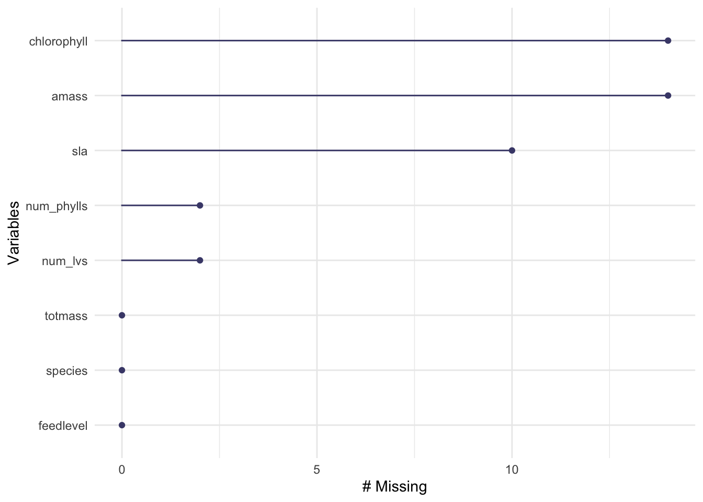
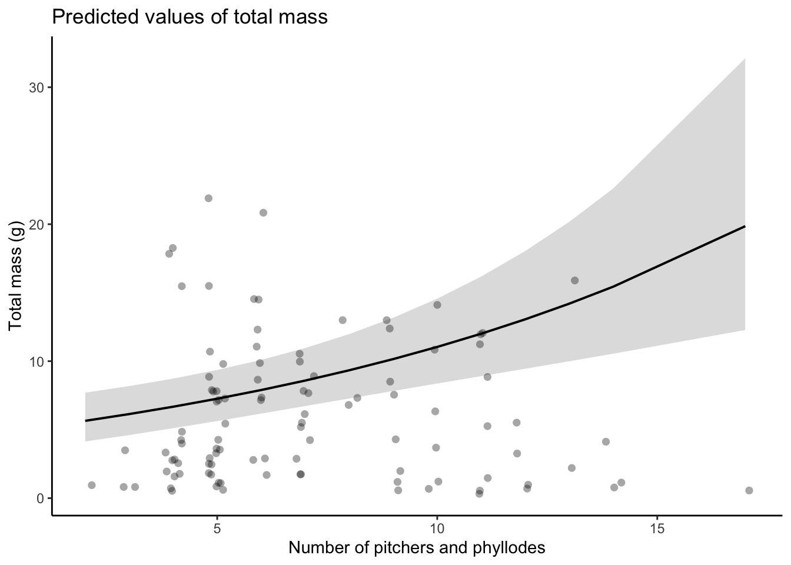

Code
# loading in necessary packages
library(tidyverse)
library(here)
library(janitor)
library(ggeffects)
library(performance)
library(naniar)
library(flextable)
library(car)
library(broom)
library(corrplot)
library(AICcmodavg)
library(GGally)Sarracenia, commonly called pitcher plant, is a genus of carnivorous plants which attracts insects using extrafloral nectaries (Dress et al., 1997). The pitchers of Sarracenia contain chemicals like Coniine which can cause paralysis and death of insects (Mody et al., 1976). Carnivorous plants are unique because they receive a portion of their nutrition from active hunting of prey, and can therefore grow in places which typically have unsuitably poor soil for plants (Król et al., 2012). In this analysis, we are utilizing a dataset containing measurements of several Sarracenia morphological and physiological characteristics which were collected in Harvard Forest in 2005 (Ellison and Farnsworth, 2021). We seek to determine which characteristics are the best predictors of the total mass of a Sarracenia plant. If our hypothesis is supported, then at least one of the characteristics will predict biomass.
# loading in necessary packages
library(tidyverse)
library(here)
library(janitor)
library(ggeffects)
library(performance)
library(naniar)
library(flextable)
library(car)
library(broom)
library(corrplot)
library(AICcmodavg)
library(GGally)# reading in the data, filtering for clarity and relevancy
plant <- read_csv(here("data", "knb-lter-hfr.109.18","hf109-01-sarracenia.csv")) %>%
# make column names cleaner
clean_names() %>%
# select columns of interest
select(totmass, species, feedlevel, sla, chlorophyll, amass, num_lvs, num_phylls)Ellison and Farnsworth (2021) conducted a manipulative feeding experiment with multiple species of Sarracenia to examine the effects of varying nutrient availability on multiple physiological factors. The resulting data was wrangled and uploaded to RStudio. We initially filtered the dataset to extract the variables most relevant to answering our research question: how do Sarracenia characteristics predict biomass? After initial wrangling and filtering, we began our analysis by creating a visualization of the missing data in our entire data subset (Figure 1). This figure brings attention to the missing values for several variables, however, the missingness is relatively low. In order to examine the relationships between the numerical variables in our dataset, we calculated Pearson’s r and visually represented the correlation using a correlation plot (Figure 2). This correlation plot allows us to visually represent the possible correlations between our variables. To further understand the relationships between our variables, we created a pair plot of each variable compared against the others (Figure 3).
To determine how species and physiological characters predict biomass, we fit multiple linear models. We started by creating a full model using the entire subset of variables of interest, with total mass (\(g\)) as the response variable, and the predictor variables being the species of Sarracenia, feed level (\(g\)), specific leaf area (\(cm^2/g\)), chlorophyll a + b content (\(mg/g\)), photosynthetic rate (\(nmol CO2 * g^-1 * s^-1\)), number of phyllodes, and number of pitchers and phyllodes. The null model does not contain our predictor variables, only the response variable. We tested our full model for normality using Shapiro-Wilk test and for heteroscedasticity using Breusch-Pagan test. Unfortunately, the full model was non-normal & heteroscedastic, therefore did not meet the assumptions for linear regression (Figure 4). To combat this, we performed a mathematical transformation by taking the log of the response variable. The resulting log transformed model did meet the visual and statistical assumption checks for linear regression by having normally distributed residuals and homoscedastic variance (Figure 5). Using this log model, we set out to determine which predictor variables best explain the response in total mass.
We found that species alone is a good predictor of total mass. Model 1, representing species as the sole predictor of biomass, conforms visually and statistically to the assumptions of linear regression (Figure 6). We chose this model due to the strong correlation between species and biomass. To create Model 2 we excluded the predictor variable that had the lowest correlation with biomass, which was number of phyllodes. Model 2 also has normally distributed residuals and homoscedastic variance (Figure 7). We hoped that excluding the variable with the weakest correlation would increase the simplicity of our results. Finally, we excluded several poorly correlated variables to create Model 3, including only the more strongly correlated variables of species, specific leaf area, feed level, chlorophyll, and number of pitchers and phyllodes. To ensure accuracy of our interpretation, we evaluated multicolinearity by calculating the generalized Variance Inflation Factor and determined that there are no related predictors which inflate the data (Table 1). We then used Akaike Info Criterion (AIC) to compare our constructed models (Table 2).
# Figure 1. visualize missing data
gg_miss_var(plant) 
Figure 1. Visualizing variables with missing data in the Sarracinia data subset. The variables chlorophyll, amass, sla, num_phylls, and num_lvs all have missing data, however, the missingness is relatively low.
# creating a subset of the data dropping NA values shown in Figure 1
plant_subset <- plant %>%
drop_na(sla, chlorophyll, amass, num_phylls, num_lvs)# correlation plot
# calculate Pearson's r for numerical values only
plant_cor <- plant_subset %>%
select(feedlevel:num_phylls) %>%
cor(method = "pearson")
#create a correlation plot
corrplot(plant_cor,
#change shape of cells
method = "ellipse",
addCoef.col = "black") 
Figure 2. Plot of correlation between variables. These values were calculated using Pearson’s r to represent the correlation between all of our variables of interest.
# pair plot
plant_subset %>%
select(species:num_phylls) %>%
ggpairs()
Figure 3. Pair plot. This plot displays the relationships between our variables of interest.
# Full and null models of filtered data
# null = no predictors
null <- lm(totmass ~ 1, data = plant_subset)
# full = response and all potential predictors
full <- lm(totmass ~ species + feedlevel + sla + chlorophyll + amass + num_lvs + num_phylls, data = plant_subset)# Full model visual assumptions check
par(mfrow = c(2,2))
plot(full)
Figure 4. Visual check of assumptions for the full model This model shows non-normality of residuals and heteroscedasticity.
# Full model stats assumptions check
check_normality(full)Warning: Non-normality of residuals detected (p < .001).check_heteroscedasticity(full)Warning: Heteroscedasticity (non-constant error variance) detected (p < .001).# Log transformation of response variable for null and full models
null_log <- lm(log(totmass) ~ 1, data = plant_subset)
full_log <- lm(log(totmass) ~ species + feedlevel + sla + chlorophyll + amass + num_lvs + num_phylls, data = plant_subset)
# Assumptions
# Log model visual assumptions check
par(mfrow = c(2,2))
plot(full_log)
Figure 5. Visual check of assumptions for the log model The log transformed model shows normal residuals and homoscedasticity.
# Log model stats assumptions check
check_normality(full_log)OK: residuals appear as normally distributed (p = 0.107).check_heteroscedasticity(full_log)OK: Error variance appears to be homoscedastic (p = 0.071).# model 1, species predicts biomass?
model1_log <- lm(log(totmass) ~ species, data = plant_subset)
# Assumptions
# model 1 visual assumptions check
par(mfrow = c(2,2))
plot(model1_log)
Figure 6. Visual assumption check for Model 1. This model shows normal residuals and homoscedasticity.
# model 1 stats assumptions check
check_normality(model1_log)OK: residuals appear as normally distributed (p = 0.374).check_heteroscedasticity(model1_log)OK: Error variance appears to be homoscedastic (p = 0.100).# model 2: species + feedlevel + sla + chlorophyll + amass + num_lvs
model2_log <- lm(log(totmass) ~ species + feedlevel + sla + chlorophyll + amass + num_lvs, data = plant_subset)
par(mfrow = c(2,2))
plot(model2_log)
Figure 6. Visual assumption check for Model 2. This model shows normal residuals and homoscedasticity.
# model 2 stats assumptions check
check_normality(model2_log)OK: residuals appear as normally distributed (p = 0.100).check_heteroscedasticity(model2_log)OK: Error variance appears to be homoscedastic (p = 0.086).# model 3: species + sla + feedlevel + chlorophyll + num_lvs
model3_log <- lm(log(totmass) ~ species + sla + feedlevel + chlorophyll + num_lvs, data = plant_subset)
par(mfrow = c(2,2))
plot(model3_log)
Figure 6. Visual assumption check for Model 3. This model shows normal residuals and homoscedasticity.
# model 3 stats assumptions check
check_normality(model3_log)OK: residuals appear as normally distributed (p = 0.062).check_heteroscedasticity(model3_log)OK: Error variance appears to be homoscedastic (p = 0.067).# Variance Inflation Factor (VIF) to evaluate multicolinearity
car::vif(full_log) GVIF Df GVIF^(1/(2*Df))
species 42.351675 9 1.231351
feedlevel 1.621993 1 1.273575
sla 1.999989 1 1.414210
chlorophyll 1.949828 1 1.396362
amass 2.872084 1 1.694722
num_lvs 2.813855 1 1.677455
num_phylls 2.995510 1 1.730754Table 1. Variance Inflation Factor (VIF). This table shows that there are no related predictors which inflate the data.
# Akaike Information Criterion (AIC)
MuMIn::model.sel(full_log, null_log, model1_log, model2_log, model3_log)Model selection table
(Int) ams chl fdl num_lvs num_phy sla spc df
model3_log -1.3910 0.004603 -0.4301 0.08385 -0.002127 + 15
model2_log -1.3190 0.002126 0.004421 -0.4593 0.08483 -0.002448 + 16
full_log -1.3390 0.002338 0.004368 -0.4743 0.09176 -0.03959 -0.002493 + 17
model1_log 0.8836 + 11
null_log 1.3500 2
logLik AICc delta weight
model3_log -47.016 129.5 0.00 0.693
model2_log -46.717 131.8 2.21 0.230
full_log -46.371 133.9 4.39 0.077
model1_log -66.337 157.6 28.03 0.000
null_log -150.941 306.0 176.45 0.000
Models ranked by AICc(x) Table 2. Akaike Information Criterion (AIC). This ranks our models by simplicity. Model 3 is the simplest model which explains the most variance.
We found that the Model 3 including the predictors species, specific leaf area, feed level, chlorophyll, and number of pitchers and phyllodes best predicted biomass. According to the AIC (Table 2), Model 3 the simplest model we created that explains the most variance. Model 1 with only species excludes other predictors which also have a strong correlation with biomass. Model 2 which removes only the number of phyllodes still leaves variables with weak correlation which negatively effect the accuracy of the overall model. All included variables in Model 3 show some level of correlation with biomass (Table 3). These predictors are also logical from a biological perspective. Species can be correlated to total mass because different species often have unique morphologies, such as size. Both specific leaf area and number of pitchers and phyllodes could be correlated to total mass because leaves of a greater area and abundance usually have more mass. A higher concentration of chlorophyll can also point to a larger, more established plant.
Within our model, we found the strongest predictor of total mass of a Sarracina plant to be the total number of pitchers and phyllodes it possesses (Table 3). We visually represented this relationship in Figure 7 which contains the predicted values of biomass for number of pitchers and phyllodes. We log transformed our response variable to meet assumptions, but we back transformed our results when creating our model prediction for ease of communication.
table <- tidy(model3_log, conf.int = TRUE) %>%
#change the p-value numbers if they tiny (>0.001)
mutate(across(estimate:statistic, ~ round(.x, digits = 3))) %>%
mutate(p.value = case_when(p.value < 0.001 ~ "< 0.001")) %>%
#make into flex table
flextable() %>%
#fit it to viewer
autofit()
tableterm | estimate | std.error | statistic | p.value | conf.low | conf.high |
|---|---|---|---|---|---|---|
(Intercept) | -1.391 | 0.585 | -2.377 | -2.554448000 | -0.22813789208 | |
speciesalata | 1.137 | 0.180 | 6.334 | < 0.001 | 0.780369221 | 1.49382737180 |
speciesflava | 1.303 | 0.196 | 6.646 | < 0.001 | 0.913673261 | 1.69299867930 |
speciesjonesii | 0.318 | 0.195 | 1.629 | -0.069868584 | 0.70651525073 | |
speciesleucophylla | 1.697 | 0.213 | 7.975 | < 0.001 | 1.273842173 | 2.11920854116 |
speciesminor | 0.397 | 0.186 | 2.141 | 0.028593133 | 0.76618716655 | |
speciespsittacina | -1.614 | 0.201 | -8.031 | < 0.001 | -2.013308620 | -1.21466094313 |
speciespurpurea | -0.435 | 0.244 | -1.783 | -0.918735914 | 0.04963226542 | |
speciesrosea | -0.867 | 0.213 | -4.068 | < 0.001 | -1.290198099 | -0.44337654267 |
speciesrubra | 0.929 | 0.178 | 5.232 | < 0.001 | 0.576076787 | 1.28151320862 |
sla | -0.002 | 0.001 | -2.001 | -0.004238361 | -0.00001507797 | |
feedlevel | -0.430 | 0.229 | -1.879 | -0.884973580 | 0.02472709246 | |
chlorophyll | 0.005 | 0.001 | 3.989 | < 0.001 | 0.002310462 | 0.00689624057 |
num_lvs | 0.084 | 0.020 | 4.120 | < 0.001 | 0.043416839 | 0.12428792720 |
Table 3. Summary of Model 3.
# model 3 predictions plot
plot(ggpredict(model3_log, terms = "num_lvs", back.transform = TRUE),
add.data = TRUE) +
labs(title = "Predicted values of total mass",
y = "Total mass (g)",
x = "Number of pitchers and phyllodes") +
theme_classic()
Figure 7. Predicted values of total mass as a function of number of pitchers and phyllodes.
Dress, W. J., Newell, S. J., Nastase, A. J., & Ford, J. C. (1997). Analysis of amino acids in nectar from pitchers of Sarracenia purpurea. American Journal of Botany, 84(12), 1701–1706. https://doi.org/10.2307/2446468
Ellison, A. and E. Farnsworth. 2021. Effects of Prey Availability on Sarracenia Physiology at Harvard Forest 2005 ver 18. Environmental Data Initiative. https://doi.org/10.6073/pasta/26b22d09279e62fd729ffc35f9ef0174.
Elżbieta Król et al. 2012. Quite a few reasons for calling carnivores ‘the most wonderful plants in the world’, Annals of Botany, Volume 109, Issue 1, Pages 47–64, https://doi.org/10.1093/aob/mcr249
Mody, N. V., Henson, R., Hedin, P. A., Kokpol, U., & Miles, D. H. (1976, July 1). Isolation of the insect paralyzing agent coniine fromsarracenia flava. SpringerLink. https://link.springer.com/article/10.1007/BF02003710